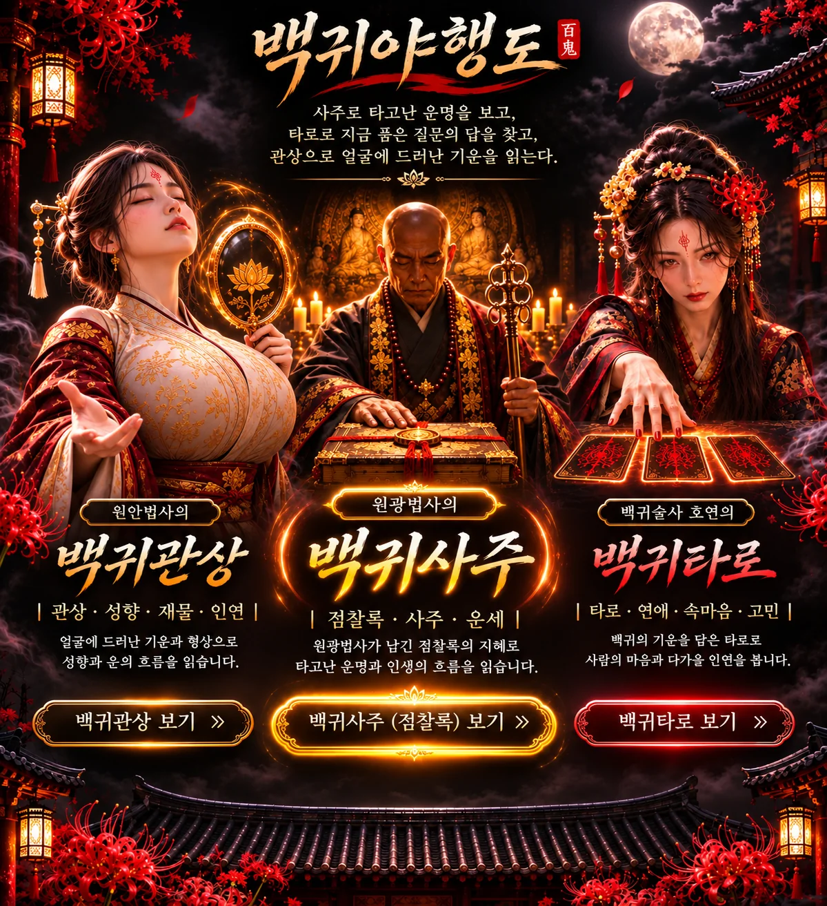
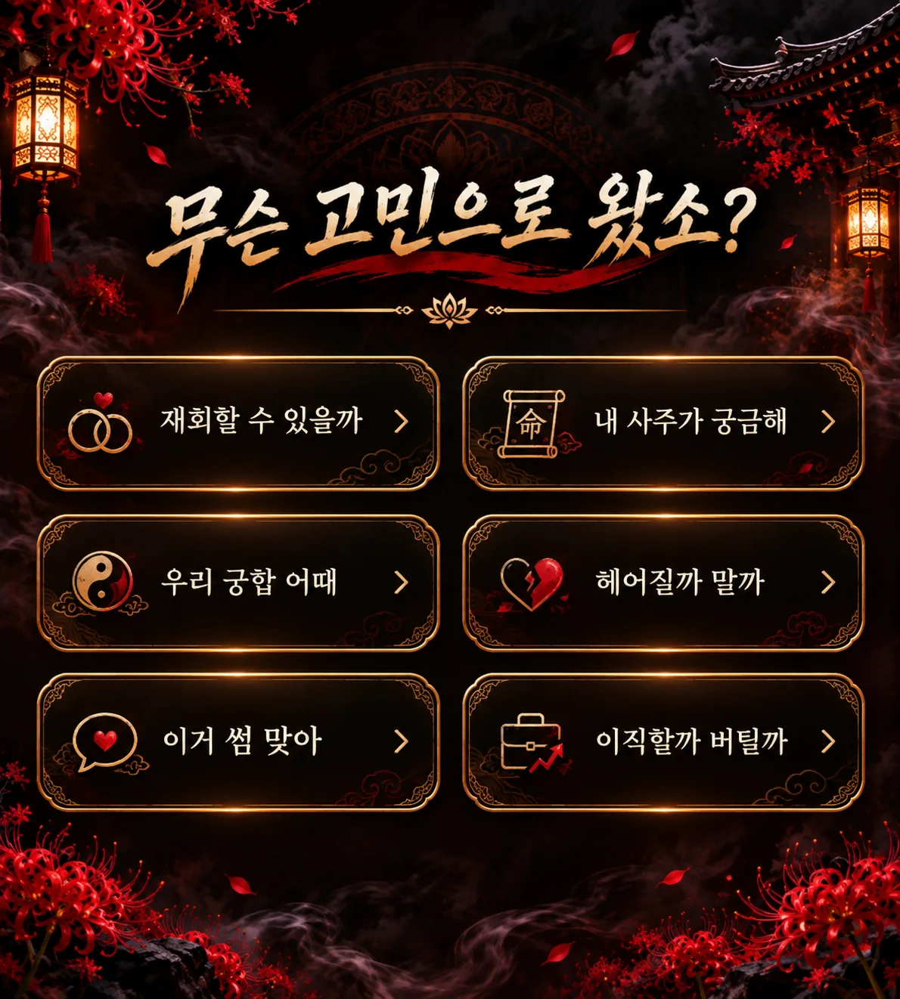
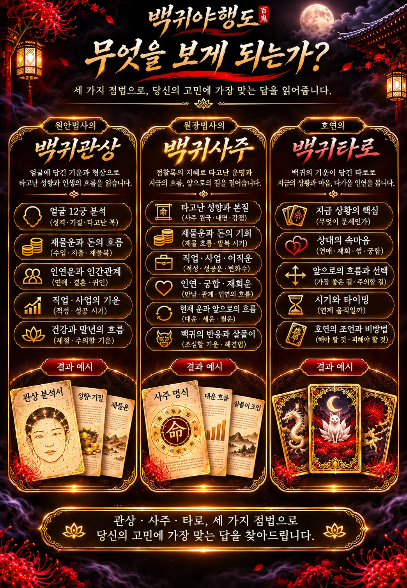
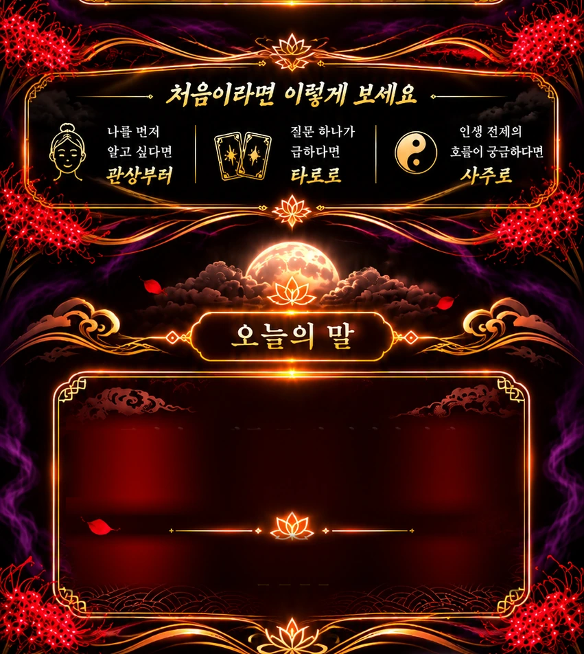
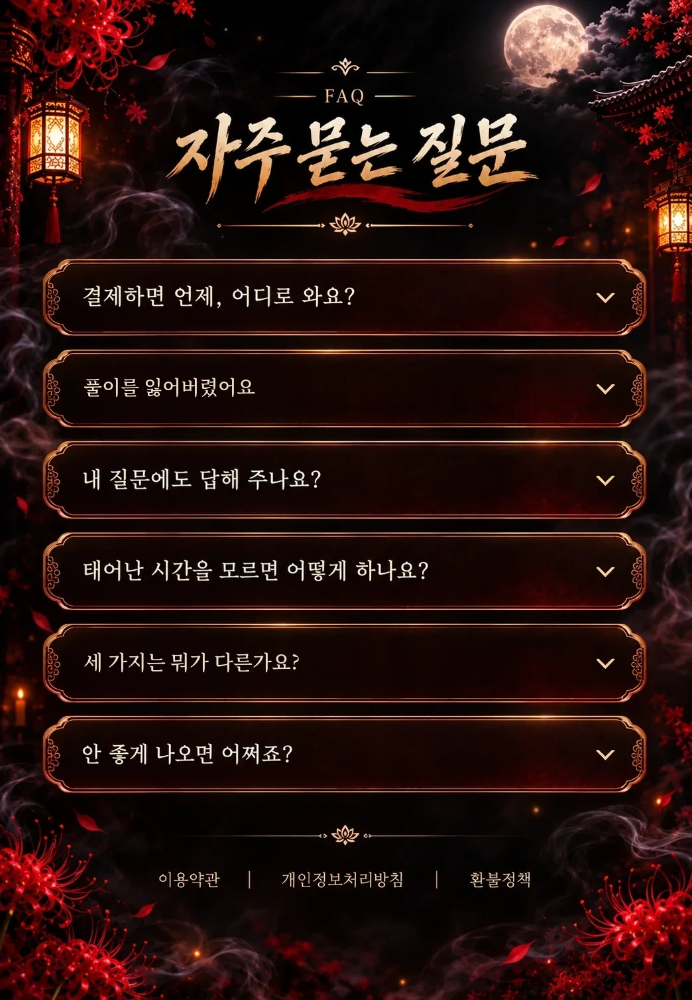

풀이가 열리지 않거나, 환불이 필요하시거나,
그 밖에 묻고 싶은 것이 있으시면 남겨 주세요.
전화번호로 연락드립니다. 이름과 생년월일을 함께 적어 주시면 결제를 찾기가 쉽습니다.
적어 주신 전화번호·이메일과 내용은 답변을 드리는 데에만 씁니다. 소비자 불만·분쟁처리 기록으로 3년 보관한 뒤 지웁니다. 급하시면 1866-0423 으로 전화 주셔도 됩니다.